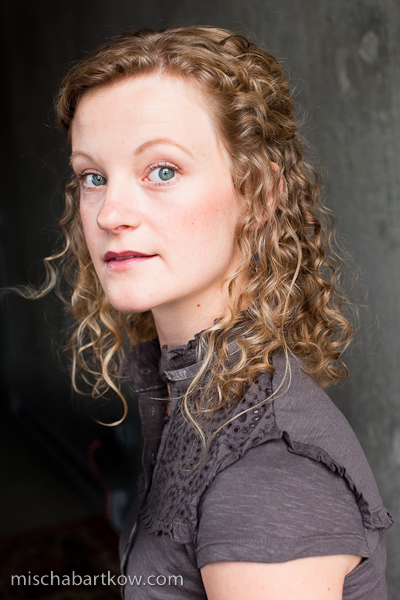

Elizabeth is an actor, emerging producer, puppeteer and mother. Elizabeth has been acting for the past decade in Calgary and Vancouver and has a BFA from the University of Calgary. Past theatre highlights include A Christmas Carol (5 consecutive years as Belle) and Much Ado About Nothing (Hero) both for Theatre Calgary, Amadeus (Katarina) for Alberta Theatre Projects, Macbeth (Witch 3, King Duncan) for Limbo Circus Theatre, Cocktails at Pam’s (Denise) for Staircase XI, and Alley Theatre’s Wicked Shorts which she acted in and co-produced alongside Marisa Smith. Wicked Shorts was produced for the 2010 Vancouver Fringe Festival and won the Cultchivating The Fringe Award. Most recently Elizabeth co-produced and acted in The Good of the Sun by BC playwright Betty Lambert for her company Good Theatre at the Vancouver Fringe Festival.